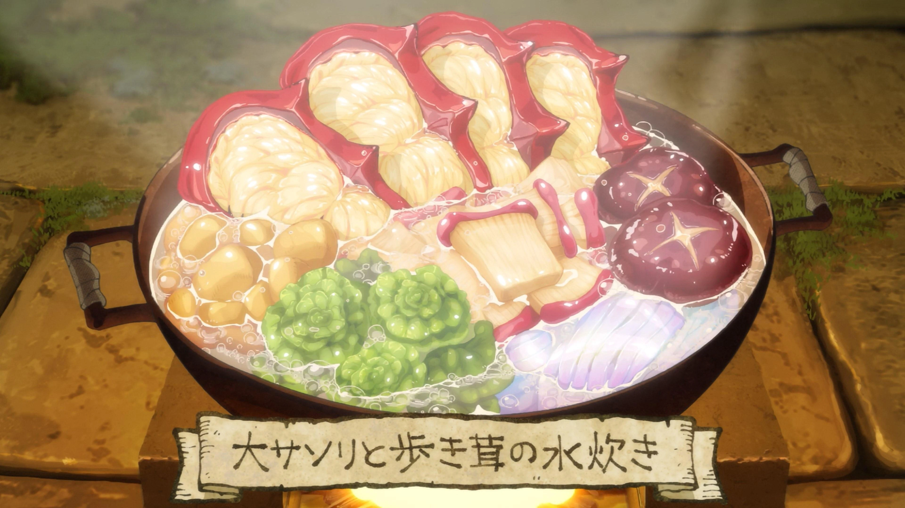

Huge Scorpion and Walking Mushroom Hotpot

Description
A warm, nourishing dish created by Senshi on his first time meeting Laios'
adventuring group, made from ingredients found on the first floor of the
dungeon. Scorpion, algae, tubers, and dried slime noodles are all boiled
together in water, creating a light soup. The leftover soup is later used
to make a
Man-Eating Plant Tart.
Ingredients
- 1 Huge Scorpion
- 1 Walking Mushroom
- 2 Mushroom legs
- Algae weedmoss, as needed
- 5 medium-sized reverse tubers
- Dried slime, to taste
- Water, as needed
Method
-
Remove the pincers, head, and legs of the Huge Scorpion. Slice the body
and remove the internal organs.
-
Remove the bottom and 3cm from the surface of the Walking Mushroom.
-
Add all the ingredients to a large pot, cover with water, and bring to a
boil.
-
Lower the heat, cover with a lid, and simmer until the meat and
vegetables are tender. Season as needed.
Home